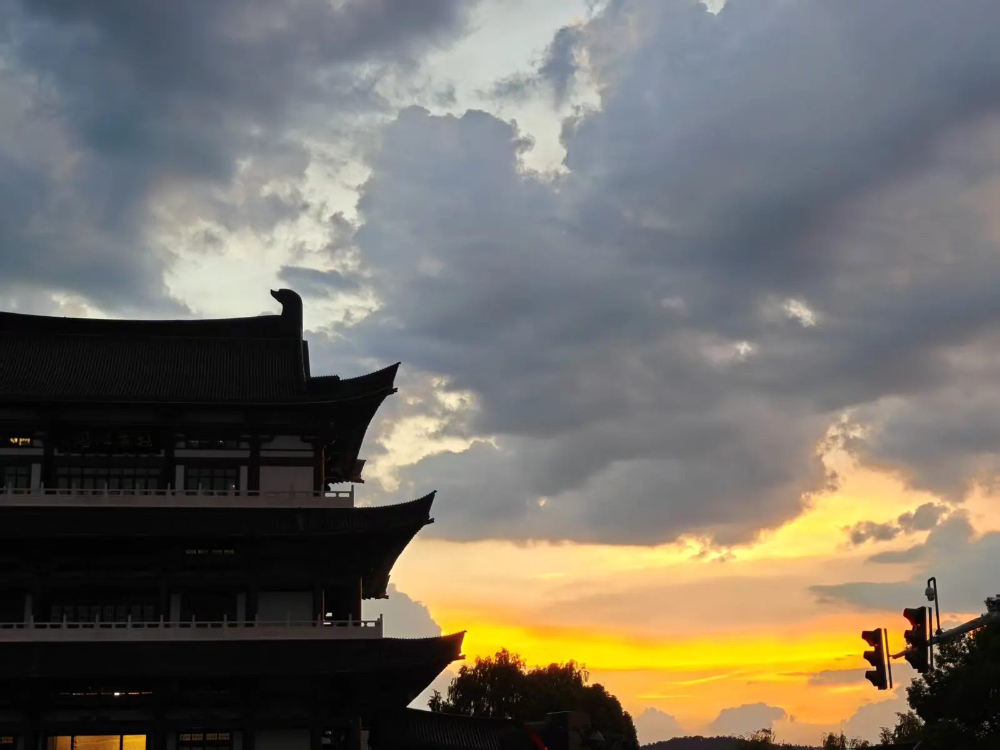
长沙 · 一日漫游志 CHANGSHA FIELD JOURNAL
山水洲城
A river that splits the city, and stitches it back.
一江穿城，一洲卧水。
半城烟火，半城是诗——
这一日，我们沿着湘江走一遍。
一座被江水
分开又缝合的城
湘江自南向北穿城而过，把长沙剖成两半：东岸是火宫殿的烟火与国金的霓虹，西岸是岳麓的青翠与橘洲的苍茫。古与今、雅与俗，都被这条江温柔地缝在一起。
这一期，我们只走一日：从清晨苍茫的雕像，到深夜亮起金光的江阁，再回到博物院里沉睡两千年的器物。四个章节，四种颜色，一条江。
本期目录 · Contents
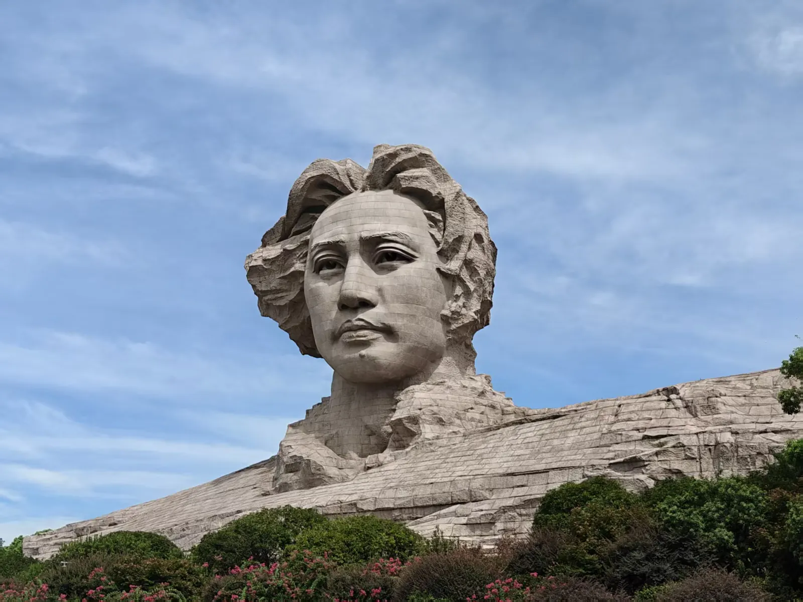
Chapter 01 · 橘子洲头
问苍茫大地
“独立寒秋，湘江北去，橘子洲头。
看万山红遍，层林尽染。”
青年毛泽东艺术雕塑高约三十二米。
他望向湘江北去的方向，
像替一百年前那句“谁主沉浮”，
继续等一个答案。
五里长岛，
把湘江一分为二
橘子洲是湘江里一道窄长的沙洲，南北长约五公里，宽处不过百余米。它把奔涌的江水劈开，又被同一片水温柔托住——长沙人叫它“水陆洲”。
// 关键词
湘江 · 江心洲
长约 5 公里
头像高 约32m
《沁园春·长沙》
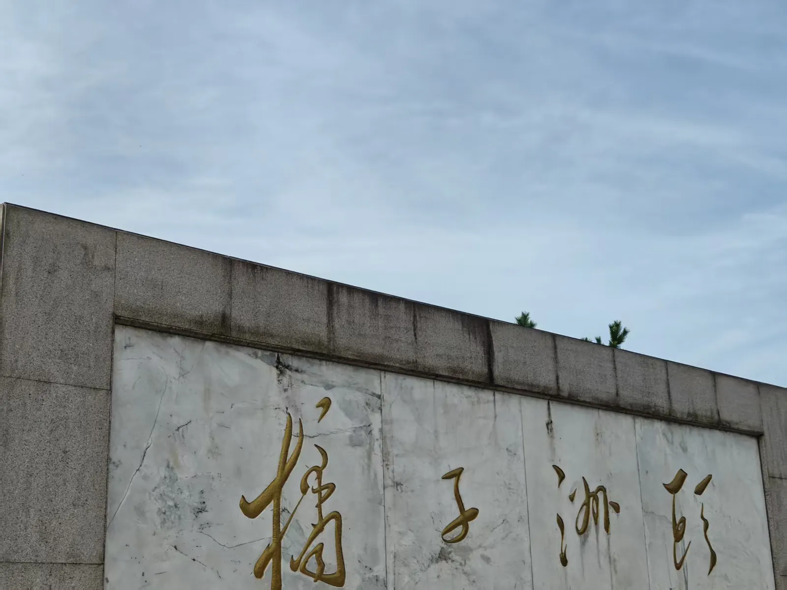
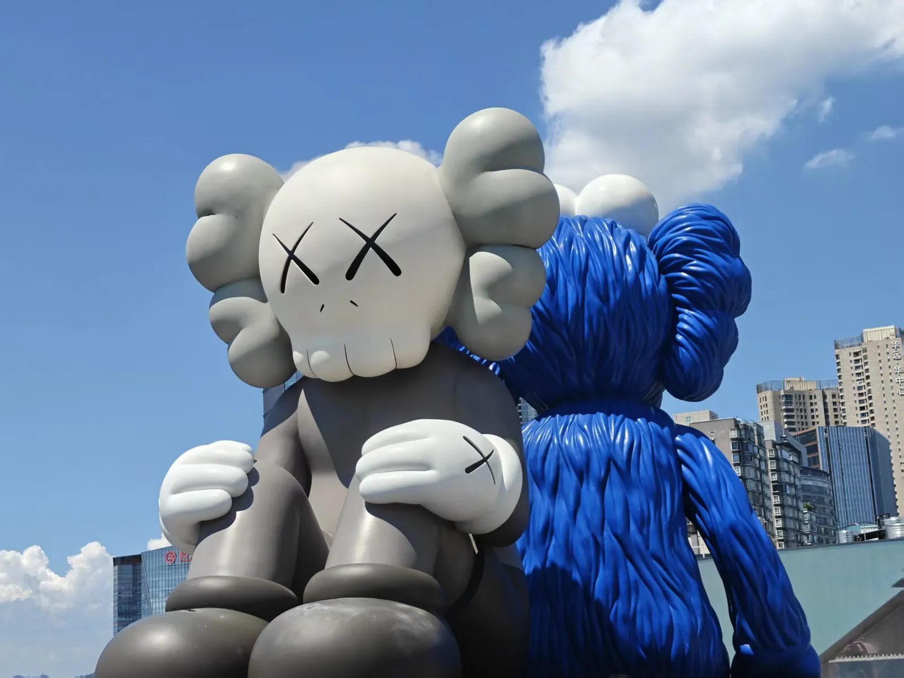
Chapter 02 · 国金中心 IFS
云端有巨物
商场七楼的雕塑花园里，
一只灰色的 COMPANION 捂着脸坐着，
蓝色的 BFF 与它背靠着背。
潮玩与天际线，是长沙写给当下的诗。
还有一只
巨大的白兔
它蹲在城市的喧嚣里，安静得像一句省略号。脚下是商场的人潮，身后是密不透风的天际线——而它只是坐着，把所有匆忙都衬得有点好笑。
来到商场七楼的雕塑花园，和一件不说话的巨物对视一会儿，城市的匆忙仿佛也慢了下来。这大概就是当代长沙的浪漫：在楼宇之间，为艺术留一片天空。
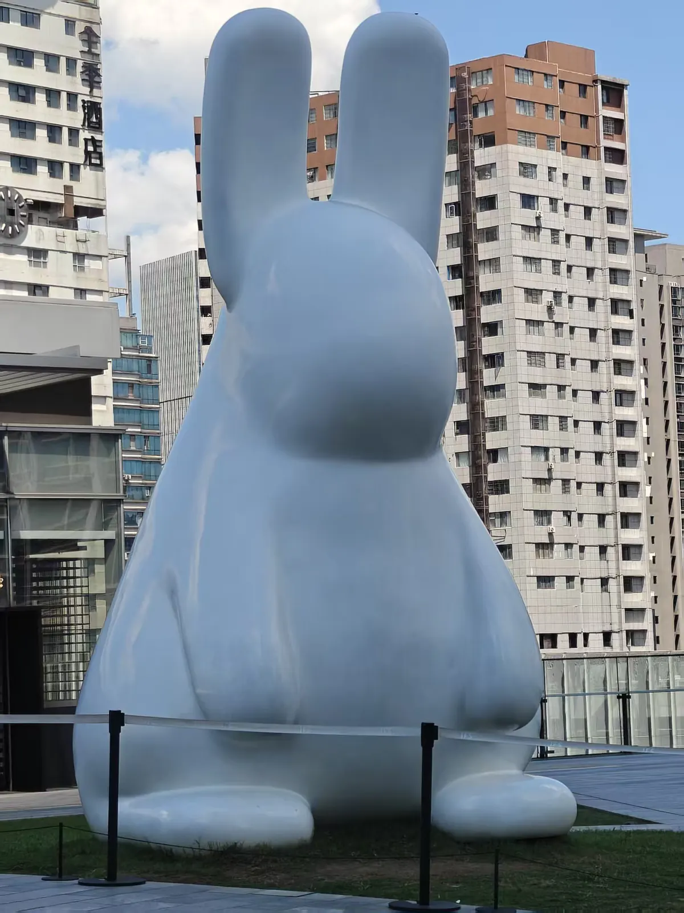
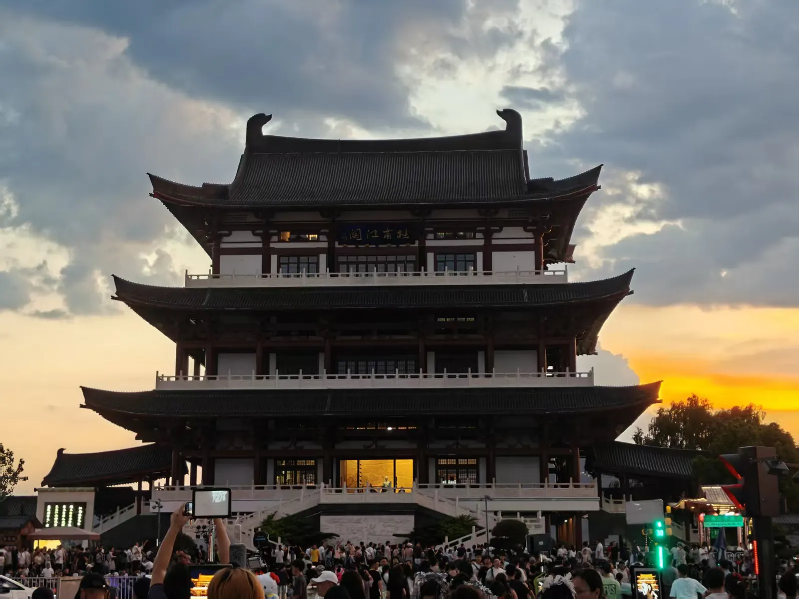
Chapter 03 · 杜甫江阁
落花时节
“正是江南好风景，落花时节又逢君。”
公元七七〇年，杜甫漂泊到潭州，
在江边写下这句。
一千二百年后，江阁在夜里亮起金光，
像替他把那场重逢，又演了一遍。
入夜，两岸的灯
次第亮起
江阁的飞檐被灯打成暖金，对岸的高楼把整面墙当作画布，蓝色的浪在楼体上翻涌。古与今隔江相望，谁也不打扰谁。
偶有汉服少年凭栏而立，衣袖被夜风吹起——恍惚之间，像是从杜甫的诗里，走出来的人。
飞檐 · 灯光秀 · 凭栏者
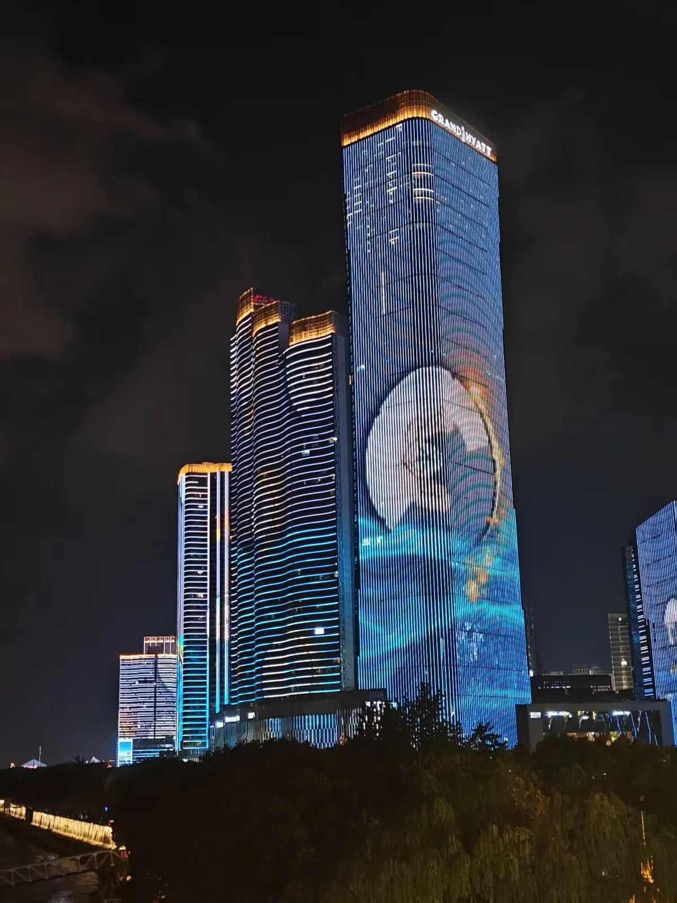
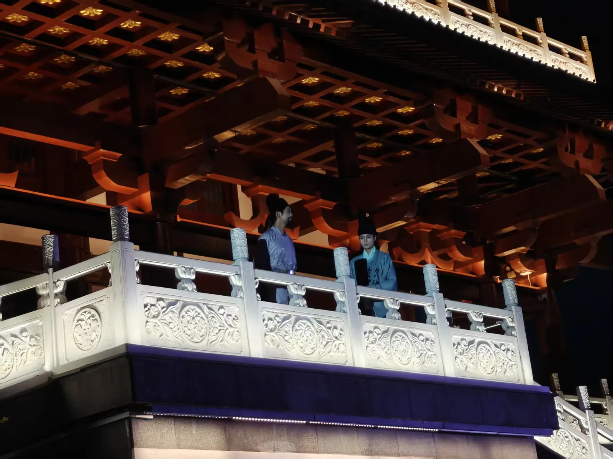
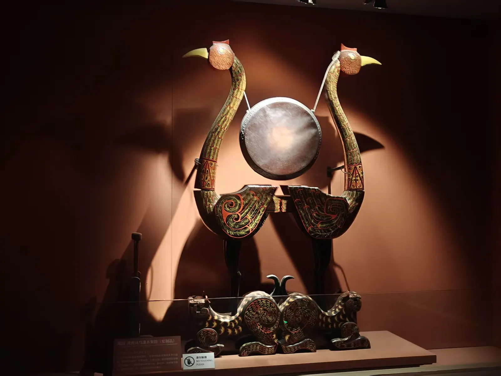
Chapter 04 · 湖南博物院 · 马王堆
一念千年
西汉的工匠在黑漆上描了一对凤鸟，
红与金缠绕成纹。两千年过去，
漆色未褪，鸟仍在引颈。
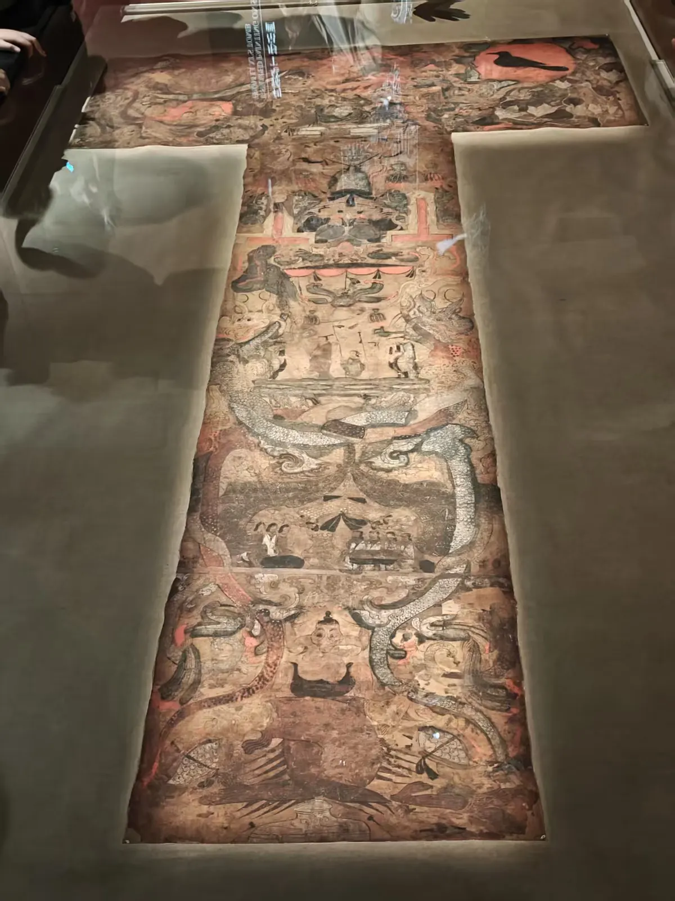
一幅帛画，
画着她想象的来世
辛追夫人的 T 形帛画，自上而下画着天、人、地三界：日中有金乌，月里有蟾蜍，巨龙穿璧而过。这是两千年前的人，为死亡写下的浪漫。
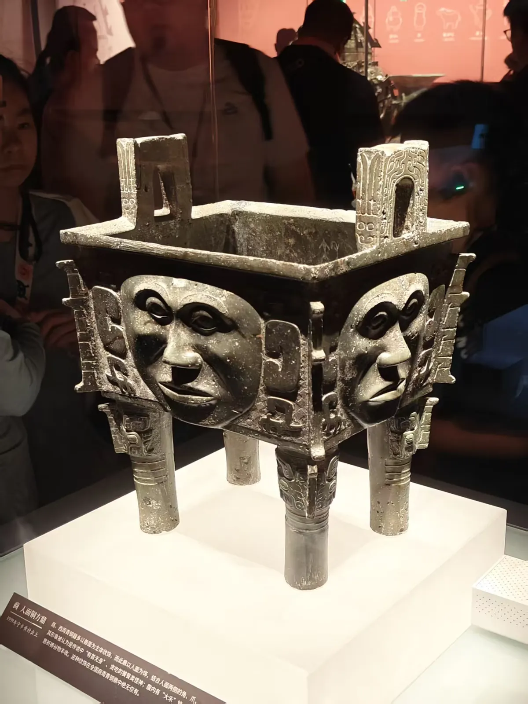
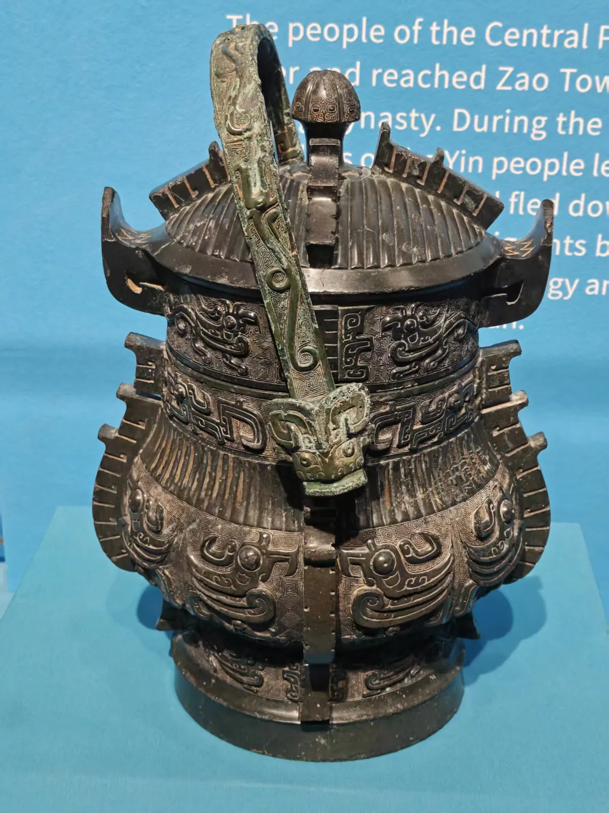
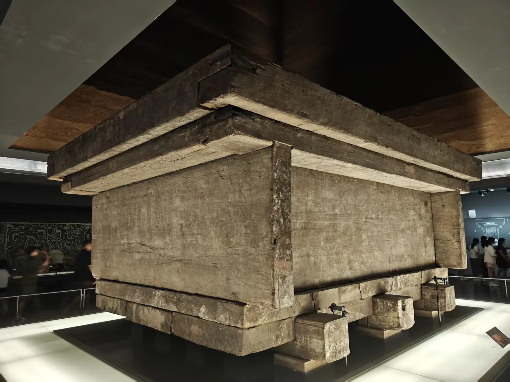
留给下一次
一日太短，
长沙太长。
江水从不重复，却总在同一处拐弯，等你回来。
下一回，换个季节，再走一遍。